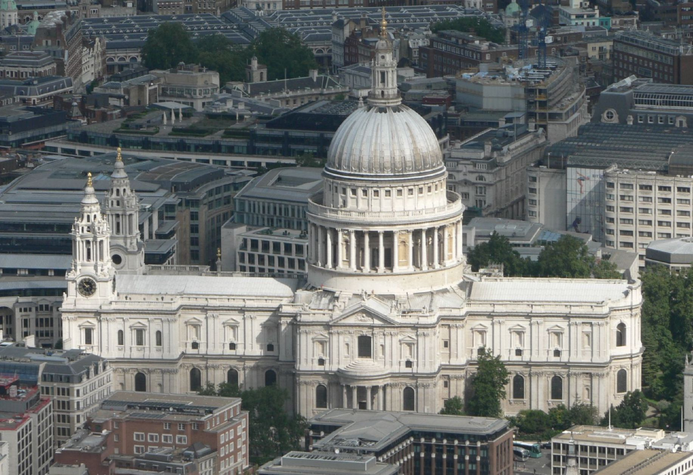

Welcome to West Bengal!
Discover the rich historical heritage of West Bengal and its captivating landmarks.
From magnificent palaces to iconic bridges, West Bengal is home to a plethora of historical sites that offer a glimpse into its glorious past.
In this blog, we will explore five remarkable historical places in West Bengal that are worth visiting:
Indian Library

The Indian Library, located in Kolkata, is a treasure trove of knowledge. It is one of the oldest and largest libraries in India, housing a vast collection of books, manuscripts, and rare documents. The magnificent architecture and serene ambiance make it a must-visit for book lovers and history enthusiasts.
Howrah Bridge

The iconic Howrah Bridge, spanning the Hooghly River in Kolkata, is a symbol of engineering marvel and an integral part of the city's identity. Built in the early 20th century, it is one of the busiest cantilever bridges in the world. Walking across the bridge while admiring the panoramic views is an unforgettable experience.
St. Paul Cathedral
St. Paul Cathedral, situated in Kolkata, is an architectural masterpiece and a significant religious landmark. Built in the 19th century, the cathedral exhibits Gothic Revival style and features exquisite stained glass windows and a towering spire. Its serene interior offers a place of solace and reflection.
Jorasanko Thakur Bari

Jorasanko Thakur Bari, the ancestral home of Nobel laureate Rabindranath Tagore, is a prominent cultural landmark in Kolkata. It showcases the life and works of the legendary poet and provides insights into Bengali art and culture. The museum inside the mansion exhibits Tagore's personal belongings, manuscripts, and artworks.
Hazar Duari
Hazar Duari, located in Murshidabad, is a historical palace known as the "Palace of a Thousand Doors." It was built during the 19th century by Nawab Nazim Humayun Jah, the ruler of Bengal, Bihar, and Odisha. The palace is a magnificent example of Indo-Islamic architecture and serves as a museum, showcasing artifacts and relics from the era of the Nawabs.
Exploring these historical places in West Bengal is like stepping back in time and immersing oneself in the rich cultural heritage of the region. Each place has its unique stories to tell and architectural marvels to behold. From the intellectual hub of the Indian Library to the iconic Howrah Bridge, from the spiritual ambiance of St. Paul Cathedral to the cultural heritage of Jorasanko Thakur Bari and the splendor of Hazar Duari, these landmarks encapsulate the essence of West Bengal's history and culture.
West Bengal's historical places offer a window into the past, inviting visitors to explore and connect with the heritage and legacy of the region. As you traverse through these sites, you'll witness the convergence of history, art, architecture, and cultural traditions, creating a truly immersive experience.
So, pack your bags, set out on a journey, and unravel the mysteries of West Bengal's past. Immerse yourself in the captivating stories, soak in the vibrant atmosphere, and create memories that will last a lifetime.